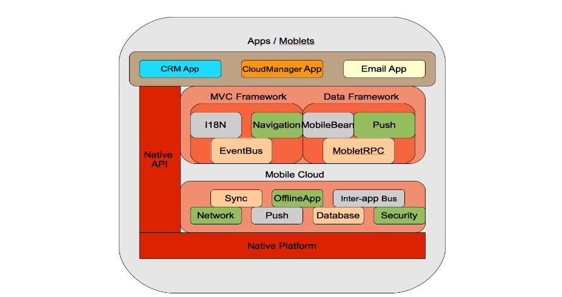
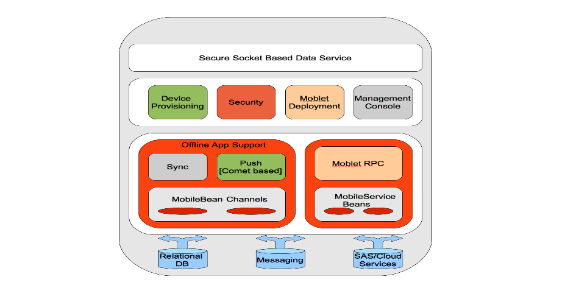

SeamFramework.orgCommunity Documentation
 This is a software stack that is installed on the mobile device. It provides the following services to Mobile Apps: Sync, Push, OfflineApp, Mobile RPC, Network, Database, Inter-App Bus.
Sync service auto-synchronizes all state changes to App/Moblet Data back with the Cloud Server. It supports various synchronization modes such as two way sync, one way server sync, one way device sync, slow sync, and boot sync.
Push service manages state updates being sent as notifications from the Cloud Server. This improves the mobile user's experience as they do not have to pro-actively check for new information. When relevant information becomes available on the server, the user is automatically notified via system notifications like a beep, vibration, etc. Clarification: The Push service is a real time comet based service. The notifications are received within the context of the App and not as SMS alerts or some other non-intuitive experience. The experience is just like the Blackberry email experience. The Cloud Server does not require any special infrastructure like the Blackberry Enterprise Server to make this happen.
OfflineApp service provided is designed to be an App Developer's best friend. Its carries the management capabilities to create smart coordination between low-level services like Sync and Push. Because of the OfflineApp service, the programmer never has to write any code to actually perform any synchronization. Synchronization is something that is managed by the OfflineApp service and it decides which mode of synchronization is the best for the current runtime state of the App. The App developer is never exposed to low level synchronization details like two way sync, one way device sync, etc. It coordinates managing the Push service. It carries the smartness to track the type of data being pushed along with which installed App on the device needs the notification. The App developer does not have to write any special code to receive notifications. The moment the data channel for the App is established, all synchronizations and push notifications are automatically handled by the OfflineApp service.
Mobile RPC facilitates making synchronous RPC (Remote Procedure Call) invocations from the device to the server side 'MobileServiceBean' components.
 This is a software stack that is installed on the server-side. It provides the following services to Mobile Apps: Sync, Push, Secure Socket-Based Data Service, Mobile RPC, Security, Management Console
Sync service synchronizes device side App state changes with the backend services where the data actually originates. It provides a plugin framework to mobilize the backend data. It uses the concept of a data "Channel" which mobilizes the data in the form of "MobileBean" instances.
Push service monitors data "Channels" for updates. The moment updates are detected, corresponding Comet-based notifications are sent back to the device. If the device is out of coverage or disconnected for some reason, it waits in a queue, and delivers the push the moment the device connects back to the network. Clarification: The push service does not depend on any special infrastructure like a Blackberry Enterprise Server to achieve its functionality. Its a pure Comet-based approach via a socket channel with the device.
Secure Socket-Based Data Service is a high performance socket server based on Java NIO. The service uses the Apache MINA network application framework. It provides both, a plain socket server , and a SSL-based socket server, depending on the security requirements of the Apps.
Mobile RPC service on the server-side provides a Remote Procedure Call framework for invoking coarse grained business services of an App. The components are plugged in as MobileService Beans and the device-side Mobile RPC service invokes them via a simple synchronous request/response based approach.
Security component provides authentication and authorization services to make sure mobile devices connecting to the Cloud Server are in fact allowed to access the system. Every device must be first securely provisioned with the system before it can be used. After the device is registered, it is challenged for proper credentials when the device itself needs to be activated. Once the device is activated, all Cloud requests are properly authenticated/authorized going forward.
Every instance of a Cloud Server ships with a Command Line application called the Management Console. The console provides user and device provisioning functionalities. In the future, this same component will have more device management features like remote data wipe, remote locking, remote tracking, etc.